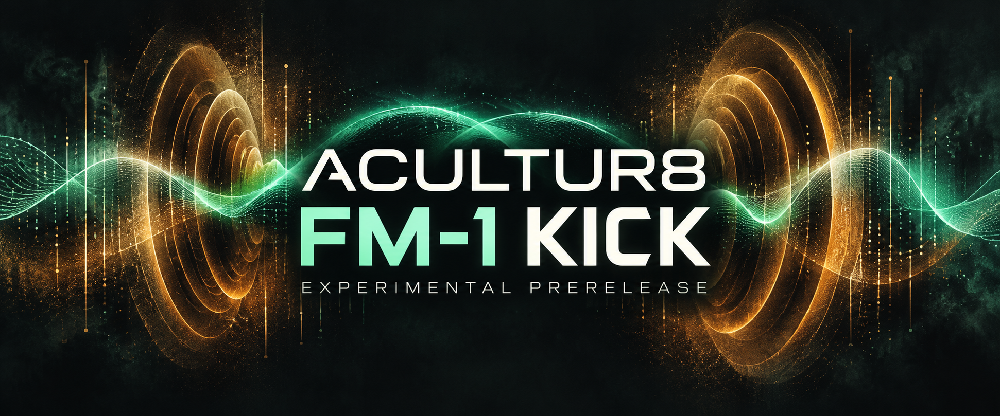

Make it yours.
Blend synth and wave layers. Shape their envelopes, tune the click and work the kick’s own filters and limiter.
Explore kick shaping →M-VAVE FM-1 / 0.1.60-stoppedtrace
Hybrid 808 kick shaping, expressive steps and a native preset bank. Explore the sound, learn the controls and build your next pattern.
EXPERIMENTAL PRERELEASE
Blend synth and wave layers. Shape their envelopes, tune the click and work the kick’s own filters and limiter.
Explore kick shaping →Store and recall a kick in one of 16 native slots. A selected Favorite Slot 1 is included as a starter reference.
Learn the preset workflow →Use velocity tiers and jitter to give a pattern expression. Find exact addresses, context and guards in the complete map.
Browse all 803 entries →The whole picture
A full searchable FAQ, the complete MIDI inventory, and an honest view of what changed from the public .32 release.
One tested FM-1 completed a user-timed 25-minute complex P11 pattern with mutations on both 303 parts, with 0 dropouts and 0 guard engagements. Software qualification includes 135 required checks, 39 host scenarios and six additional kick groups.
Physical core1 stack and broader deadline coverage remain unmeasured. Two earlier .59 counter events remain unexplained. The observed run does not guarantee every pattern, DAW or MIDI setup. The original IRQ limit remains 85 instructions (wrapper: 83); guard thresholds are unchanged.
Use this page as the campaign link. Download the secondary banner for a social post or cover; keep the experimental-prerelease label when sharing.